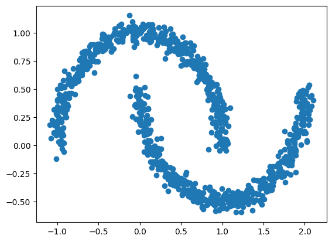
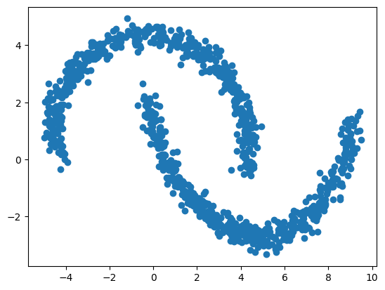
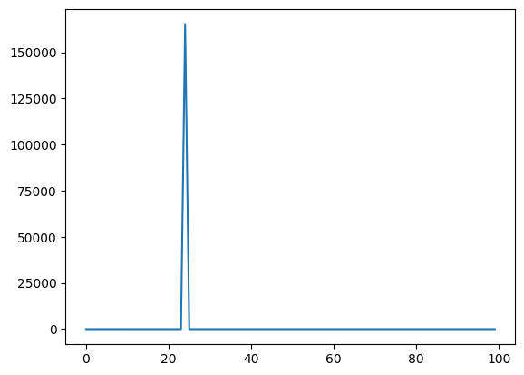
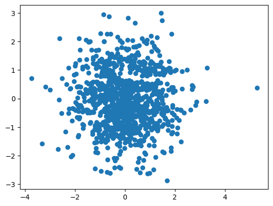
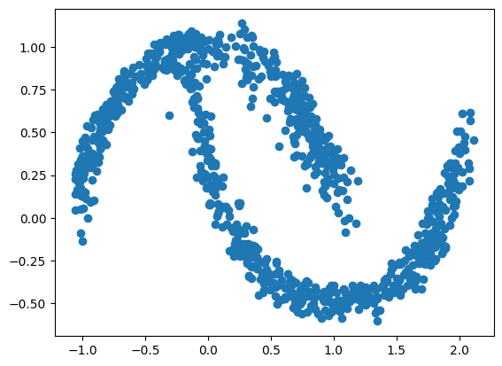

import os
os.environ["KERAS_BACKEND"] = "tensorflow"
import tensorflow as tf
import keras
import numpy as np
import matplotlib.pyplot as plt
from sklearn.datasets import make_moons
from math import piNormalizing flow
In this notebook, we will create our own normalizing flow model, and train it to reproduce the “moons” distribution available from the sklearn library.
We will use affine coupling layers to compose our normalizing flow.
The data
First, let’s visualise the data that we want to be able to reproduce with a normalizing flow.
n_samples = 1_000
data, _ = make_moons(n_samples=n_samples, noise=0.05)
data.shape(1000, 2)The data is composed of 2 columns (i.e., random variables). We can visualize the data using a scatter plot.
fig=plt.scatter(data[:,0], data[:,1])
The model
The whole normalizing flow model is composed of multiple coupling layers. So that we avoid code duplication, we will first define our own affine coupling layer, which we will later on reuse when composing our normalizing flow.
Affine coupling layer
And affine coupling layer need to be able to do the following steps:
- Split the input variables (
x) into 2 parts - one that stays the same (x1), and one that is being transformed (x2). - Use
x1to “predict” the shift (mu) and scale (sigma) of the affine transform ofx2 - Compute the transformation of
x2:x2 = mu + sigma * x2 - Concatenate
x1and the transformedx2
class AffineCoupling(keras.layers.Layer):
def __init__(self, swap, n_units, n_layers):
""" This is where we initiate the layer
Parameters
----------
swap: bool
Whether or not to swap x1 and x2
n_units: int
How many neurons should each layer of our coupling network be
n_layers: int
How many layers should the coupling network be
"""
super(AffineCoupling, self).__init__()
self.swap = swap
# Create two networs: one for scale and one for shift
self.sigma = keras.Sequential(
[keras.layers.Dense(n_units, activation="gelu") for _ in range(n_layers)]
)
# scale should be always positive, so the ouptut activation is softplus
self.sigma.add(keras.layers.Dense(1, activation="softplus"))
self.mu = keras.Sequential(
[keras.layers.Dense(n_units, activation="gelu") for _ in range(n_layers)]
)
self.mu.add(keras.layers.Dense(1))
def call(self, x, backward=False):
""" Call the coupling layer
1. Split the data in two halfs
2. Compute the scale and shift parameters based on one half (x1)
3. Scale and shift the other half (x2)
4. Concatenate x1 and x2
Parameters
----------
x: Tensor
The input data
backward: bool
Should we do a backward (inverse) transform instead?
"""
if self.swap:
x2, x1 = keras.ops.split(x, indices_or_sections=2, axis=1)
else:
x1, x2 = keras.ops.split(x, indices_or_sections=2, axis=1)
sigma = self.sigma(x1)
mu = self.mu(x1)
if backward:
y2 = x2 * sigma + mu
log_det_jac = keras.ops.log(sigma)
else:
y2 = (x2 - mu) / sigma
log_det_jac = -keras.ops.log(sigma)
if self.swap:
y = keras.ops.concatenate([y2, x1], axis=1)
else:
y = keras.ops.concatenate([x1, y2], axis=1)
return y, log_det_jacNormalizing flow
The whole normalizing flow model needs to hold a collection of coupling layers, and alternate between which axis will get transformed. When data are passed in, the network should call the layers sequentially.
We will implement
.forwardmethod (data -> base distribution).backwardmethod (base distribution -> data).log_probmethod that we will use for training.samplemethod that simply samples from the base distribution and calls the.backwardmethod to produce samples from the data distribution
The base distribution we chose is Normal, which makes our coupling affine model a Normalizing flow.
class NormalizingFlow(keras.Model):
def __init__(self, n_coupling_layers, n_units, n_layers):
""" Initialize the normalizing flow model
Parameters
----------
n_coupling_layers: int
How many coupling layers does the model consist of
n_units: int
How many neurons should each layer of our coupling layers be
n_layers: int
How many layers should the coupling network be
"""
super(NormalizingFlow, self).__init__()
self.coupling_layers = [AffineCoupling(swap=(i % 2 == 0), n_units=n_units, n_layers=n_layers) for i in range(n_coupling_layers)]
def forward(self, x):
"""Run the normalizing flow in forward direction (data -> base)
"""
log_det_jac = keras.ops.zeros(x[...,:1].shape)
z = x
for layer in self.coupling_layers:
z, ldj = layer(z)
log_det_jac = log_det_jac + ldj
return z, log_det_jac
def backward(self, z):
"""Run the normalizing flow in the backward direction (base -> data)
"""
log_det_jac = keras.ops.zeros(z[...,:1].shape)
x = z
for layer in reversed(self.coupling_layers):
x, ldj = layer(x, backward=True)
log_det_jac = log_det_jac + ldj
return x, log_det_jac
def log_prob(self, x):
"""Calculate the log probability of the data"""
z, log_det_jac = self.forward(x)
log_prob = self.log_prob_base(z) + log_det_jac
return log_prob
def log_prob_base(self, z):
"""Helper method: Calculate the (unnormalized) density of a bivariate normal base distribution"""
kernel = -0.5 * keras.ops.sum(z ** 2, axis=-1)
return kernel
def sample(self, n_samples):
"""Sample from the data distribution"""
z = keras.random.normal((n_samples, 2))
x, _ = self.backward(z)
return x
One we defined our model classes, we can instantiate a new normalizing flow object.
#flow = NormalizingFlow(n_coupling_layers=10, n_units=16, n_layers=4)
flow = NormalizingFlow(n_coupling_layers=8, n_units=16, n_layers=4)For example, you can use the object to forward transform our data samples and plot the results. Because the networks were not trained yet, the results will not be sensible.
z, _ = flow.forward(data)
fig=plt.scatter(z[:,0], z[:,1])
Training
We will use manual training loop for training the normalizing flow model. This should make you see a little bit how the networks are trained.
To do this, we will need to define our training schedule, our training data, and, of course, run our training loop.
First, we will need to define our optimizer. Here we will use Adam and use a CosineDecay learning rate schedule to smoothen the training process a little.
We will train for a number of epochs. In each epoch, we loop over the entire dataset in batches. For example, if we have 1_000 data samples and we make batches of size 50 samples, we will make 15 steps per epoch. We repeat this for each epoch which will determine the total number of steps. This calculation is important to make sure that the CosineDecay schedule is setup correctly.
epochs=100
batch_size=50
schedule = keras.optimizers.schedules.CosineDecay(initial_learning_rate=0.001, decay_steps=epochs * n_samples // batch_size)
optimizer = keras.optimizers.Adam(schedule, global_clipnorm=1.0)For training, we will use the data that we generated earlier, but we will chop it into separate batches.
dataset = tf.data.Dataset.from_tensor_slices(data.astype("float64"))
dataset = dataset.batch(batch_size)To train the model manually, we will need to implement a function that calculates the gradient of the model weights, given the data. Luckily, tensorflow helps us here by providing a tf.GradientTape, which you can think of as an environment which allows you to automatically calculate the gradients of a custom loss function with respect to the trainable weights provided by the model.
Here, our loss function is the negative log-likelihood (implemented by our normalizing flow model), and we average it over multiple samples from the data.
def train_step(model, x):
with tf.GradientTape() as tape:
loss = - model.log_prob(x)
loss = tf.reduce_mean(loss)
g = tape.gradient(loss, model.trainable_variables)
return g, loss Now it is time to implement our training loop.
We loop over all epochs. Within each epoch, we loop over all our batches of data. For each batch of data, we compute the loss and the gradient. We pass the gradients to the optimizer which updates the network weights. We also save the computed losses and print them so that we can keep track of the progress.
losses = []
for epoch in range(epochs):
epoch_loss = 0.0
for batch in dataset:
g, loss = train_step(flow, batch)
optimizer.apply_gradients(zip(g, flow.trainable_variables))
epoch_loss += loss.numpy()
epoch_loss = epoch_loss / len(dataset)
losses.append(epoch_loss)
print("epoch: ", epoch+1, "\tloss: ", epoch_loss)2025-03-21 15:38:32.394318: I tensorflow/core/framework/local_rendezvous.cc:407] Local rendezvous is aborting with status: OUT_OF_RANGE: End of sequenceepoch: 1 loss: 4.5091197609901432025-03-21 15:38:37.239786: I tensorflow/core/framework/local_rendezvous.cc:407] Local rendezvous is aborting with status: OUT_OF_RANGE: End of sequenceepoch: 2 loss: 0.4614365412387997
epoch: 3 loss: 0.035899769735988232025-03-21 15:38:46.868376: I tensorflow/core/framework/local_rendezvous.cc:407] Local rendezvous is aborting with status: OUT_OF_RANGE: End of sequenceepoch: 4 loss: -0.07153807431459427
epoch: 5 loss: -0.15452831350266932
epoch: 6 loss: -0.2195332646369934
epoch: 7 loss: -0.30661329627037052025-03-21 15:39:06.164537: I tensorflow/core/framework/local_rendezvous.cc:407] Local rendezvous is aborting with status: OUT_OF_RANGE: End of sequenceepoch: 8 loss: -0.3086996302008629
epoch: 9 loss: -0.14708678657189012
epoch: 10 loss: -0.33719309568405154
epoch: 11 loss: -0.5016207732260227
epoch: 12 loss: -0.5299644388258458
epoch: 13 loss: -0.5786493174731732
epoch: 14 loss: -0.4788939183577895
epoch: 15 loss: -0.66306455489248042025-03-21 15:39:46.608116: I tensorflow/core/framework/local_rendezvous.cc:407] Local rendezvous is aborting with status: OUT_OF_RANGE: End of sequenceepoch: 16 loss: -0.3813606560230255
epoch: 17 loss: -0.7215842207893729
epoch: 18 loss: -0.6046214617788792
epoch: 19 loss: -0.7788489066064358
epoch: 20 loss: -0.789466593042016
epoch: 21 loss: -0.5925373002886772
epoch: 22 loss: -0.846959587931633
epoch: 23 loss: 0.986885204911232
epoch: 24 loss: -0.8945280626416207
epoch: 25 loss: 165269.66411226988
epoch: 26 loss: -0.9101028084754944
epoch: 27 loss: -0.9852996498346329
epoch: 28 loss: -0.8124980151653289
epoch: 29 loss: -0.9974936187267304
epoch: 30 loss: -0.9628325670957565
epoch: 31 loss: -0.99997276961803442025-03-21 15:41:05.130025: I tensorflow/core/framework/local_rendezvous.cc:407] Local rendezvous is aborting with status: OUT_OF_RANGE: End of sequenceepoch: 32 loss: -1.0431531459093093
epoch: 33 loss: -1.0677111208438874
epoch: 34 loss: -0.9242087975144386
epoch: 35 loss: -0.8699889570474625
epoch: 36 loss: -1.0687092512845993
epoch: 37 loss: -1.0548439770936966
epoch: 38 loss: -0.8766490086913109
epoch: 39 loss: -0.7317251592874527
epoch: 40 loss: -1.0792913630604744
epoch: 41 loss: -1.140863972902298
epoch: 42 loss: -1.1754374355077744
epoch: 43 loss: -1.1837623178958894
epoch: 44 loss: -1.203491023182869
epoch: 45 loss: -1.2166150778532028
epoch: 46 loss: -1.22667535841465
epoch: 47 loss: -1.2414973974227905
epoch: 48 loss: -1.2488927781581878
epoch: 49 loss: -1.2652060627937316
epoch: 50 loss: -1.2690628826618195
epoch: 51 loss: -1.2715873539447784
epoch: 52 loss: -1.268251371383667
epoch: 53 loss: -1.2901792645454406
epoch: 54 loss: -1.291833186149597
epoch: 55 loss: -1.2950453579425811
epoch: 56 loss: -1.301222288608551
epoch: 57 loss: -1.3077153325080872
epoch: 58 loss: -1.3093678325414657
epoch: 59 loss: -1.3141041189432143
epoch: 60 loss: -1.3188152104616164
epoch: 61 loss: -1.32499398291111
epoch: 62 loss: -1.330186489224434
epoch: 63 loss: -1.33475167155265822025-03-21 15:43:39.859420: I tensorflow/core/framework/local_rendezvous.cc:407] Local rendezvous is aborting with status: OUT_OF_RANGE: End of sequenceepoch: 64 loss: -1.3384576618671418
epoch: 65 loss: -1.3418648838996887
epoch: 66 loss: -1.3449950575828553
epoch: 67 loss: -1.347951352596283
epoch: 68 loss: -1.3507327556610107
epoch: 69 loss: -1.3533526301383971
epoch: 70 loss: -1.3557960271835328
epoch: 71 loss: -1.3580805480480194
epoch: 72 loss: -1.3602263271808623
epoch: 73 loss: -1.3622412204742431
epoch: 74 loss: -1.3641252756118774
epoch: 75 loss: -1.3658817768096925
epoch: 76 loss: -1.3675154507160188
epoch: 77 loss: -1.3690306961536407
epoch: 78 loss: -1.370433324575424
epoch: 79 loss: -1.371729701757431
epoch: 80 loss: -1.372925877571106
epoch: 81 loss: -1.3740281283855438
epoch: 82 loss: -1.3750418305397034
epoch: 83 loss: -1.3759720921516418
epoch: 84 loss: -1.376823902130127
epoch: 85 loss: -1.3776013851165771
epoch: 86 loss: -1.3783084511756898
epoch: 87 loss: -1.378948837518692
epoch: 88 loss: -1.3795257031917572
epoch: 89 loss: -1.3800430119037628
epoch: 90 loss: -1.3805034518241883
epoch: 91 loss: -1.380909937620163
epoch: 92 loss: -1.3812653243541717
epoch: 93 loss: -1.3815723538398743
epoch: 94 loss: -1.3818340957164765
epoch: 95 loss: -1.3820523381233216
epoch: 96 loss: -1.3822305500507355
epoch: 97 loss: -1.382369577884674
epoch: 98 loss: -1.3824726343154907
epoch: 99 loss: -1.3825409412384033
epoch: 100 loss: -1.3825759172439576The losses should decrease over epochs and slowly converge to some minimum. To see how that better, we can plot the losses.
fig=plt.plot(losses)
Now, if we apply the network to the data, the transformed variables should look much more like sampled from a bivariate normal distribution.
z, _ = flow.forward(data)
fig=plt.scatter(z[:,0], z[:,1])
And conversely we can sample a new data set from the approximate moons distribution using the trained model.
y = flow.sample(n_samples)
fig = plt.scatter(y[:,0], y[:,1])